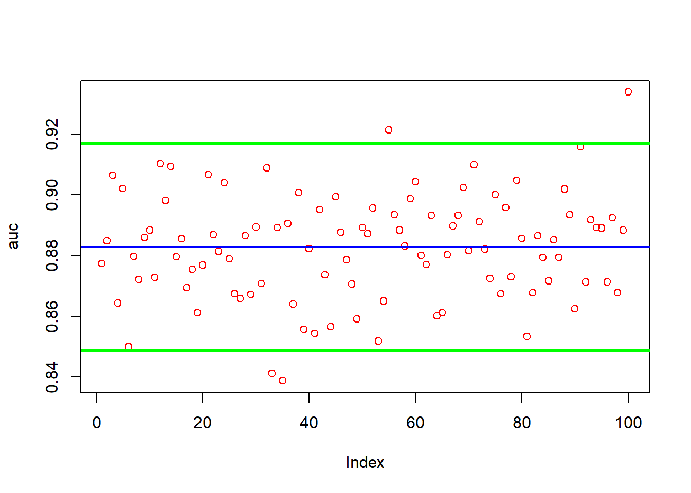
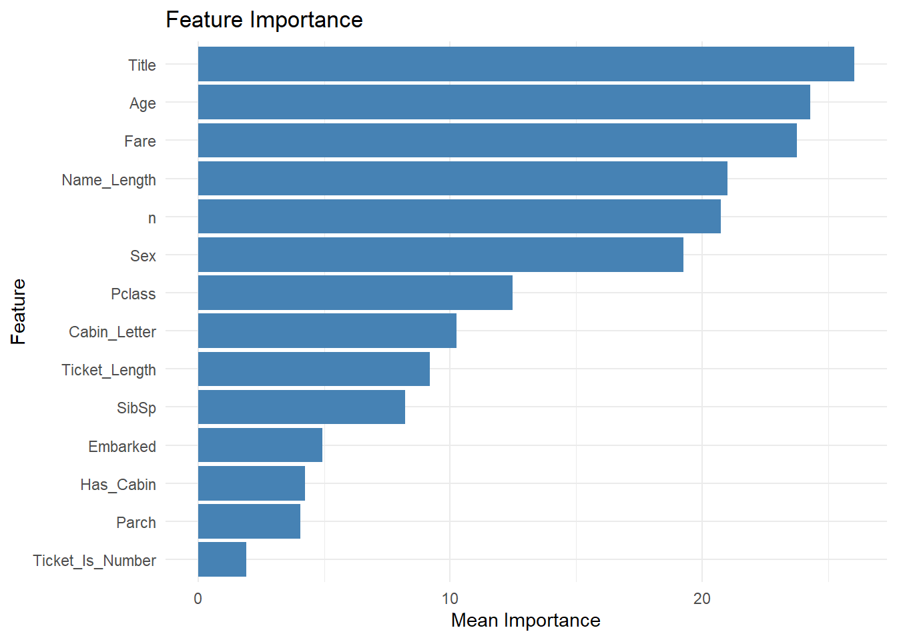
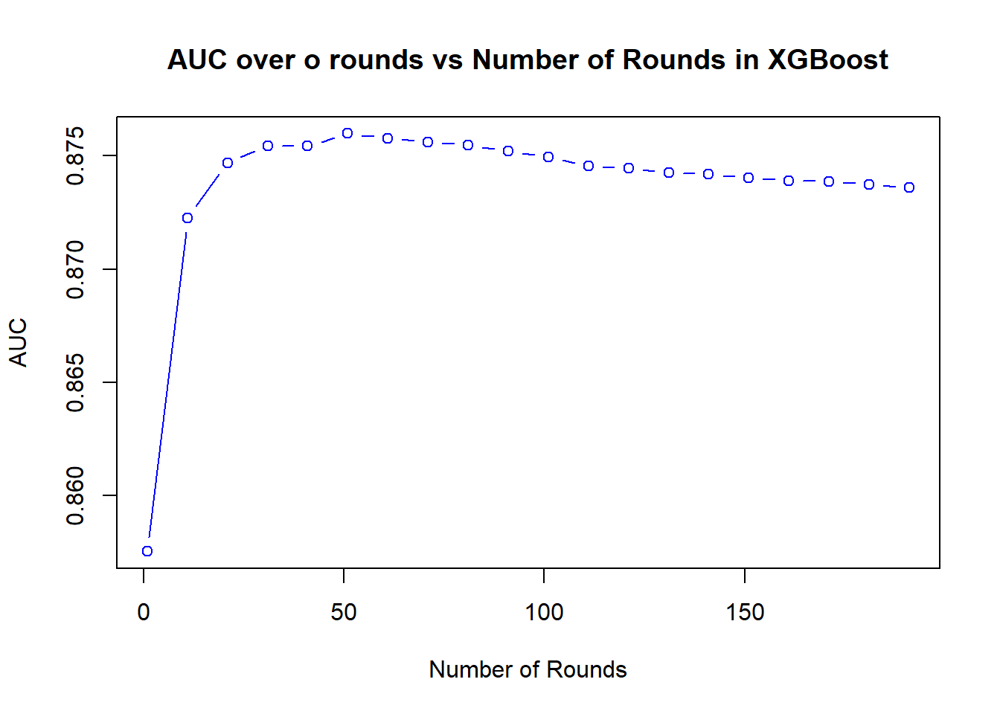
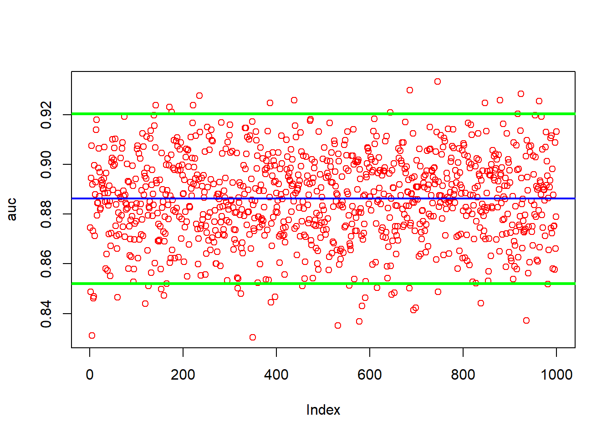
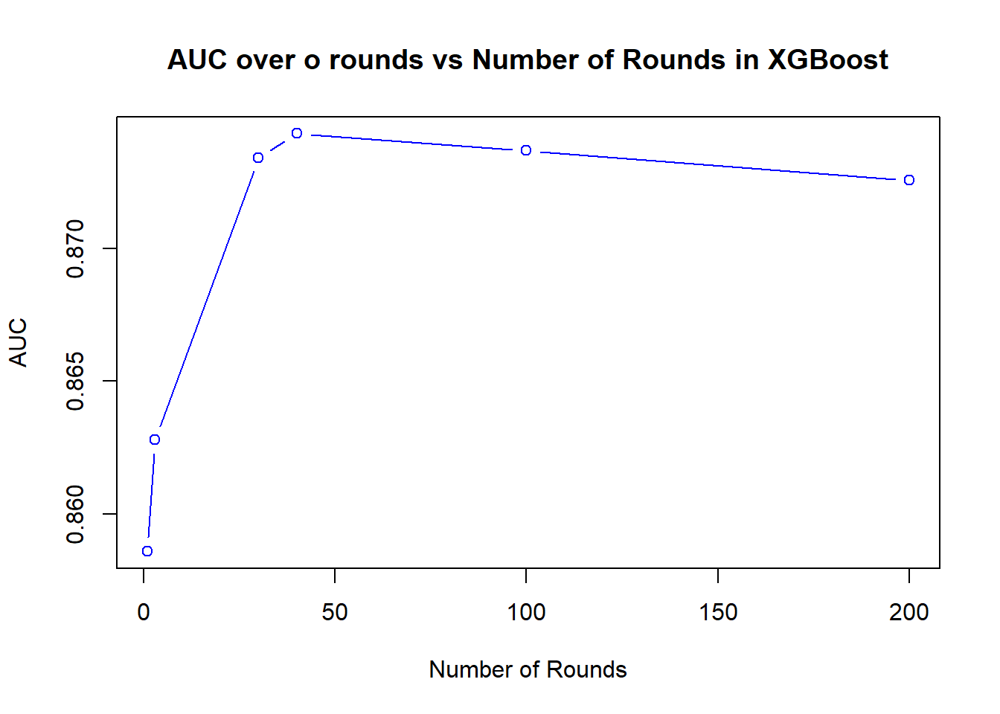
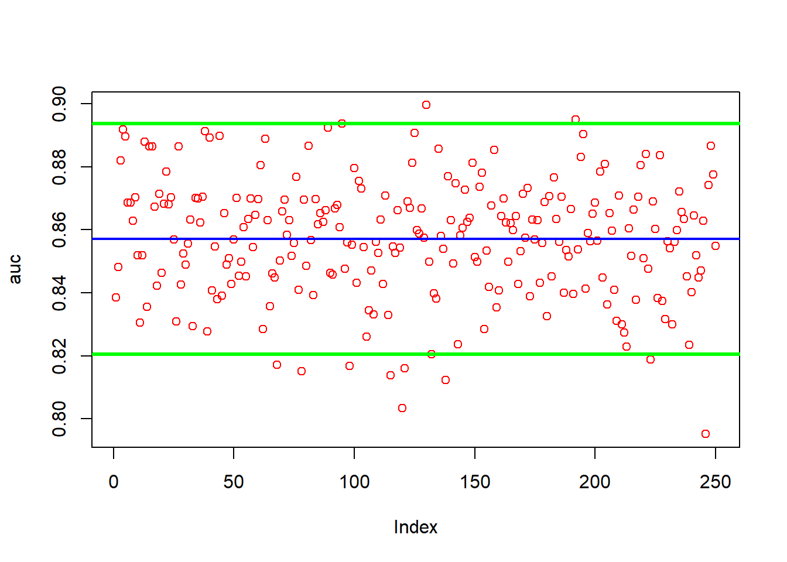
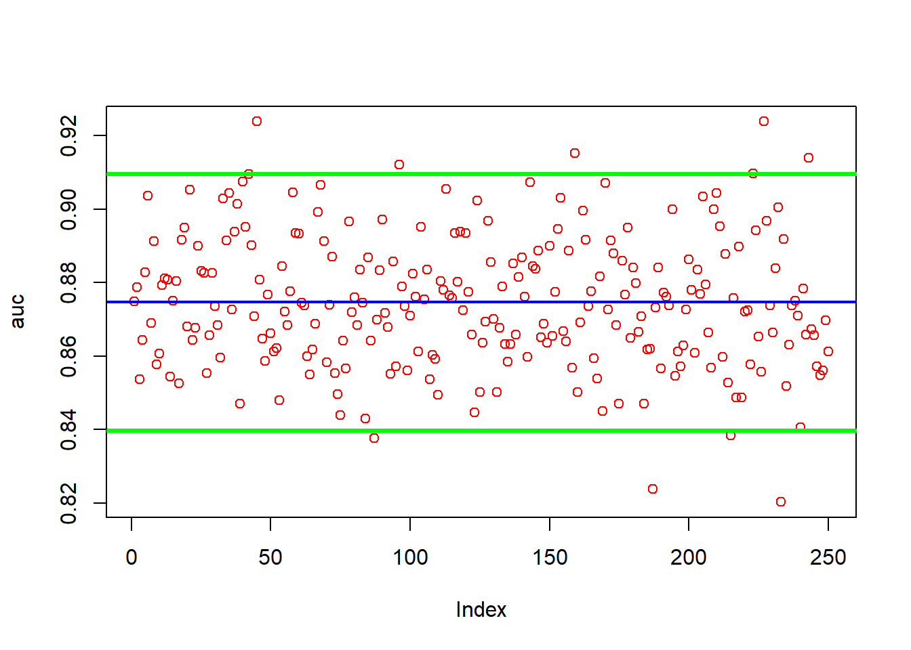
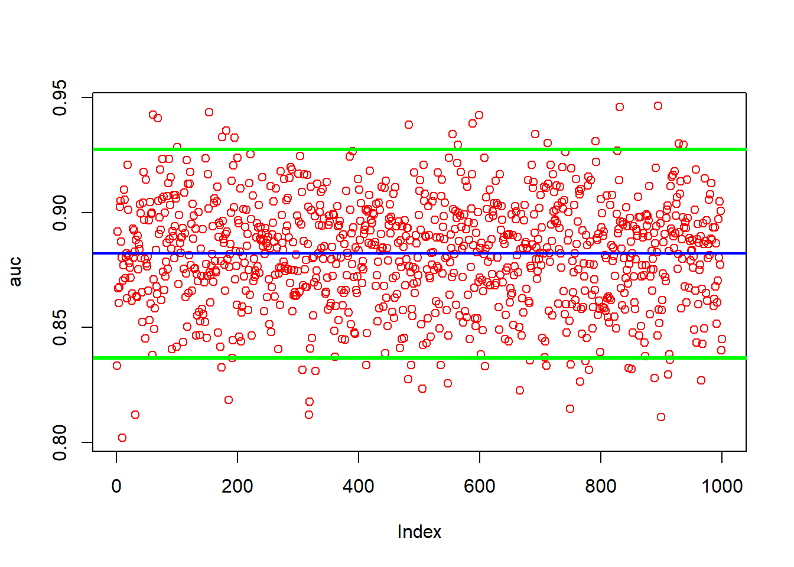
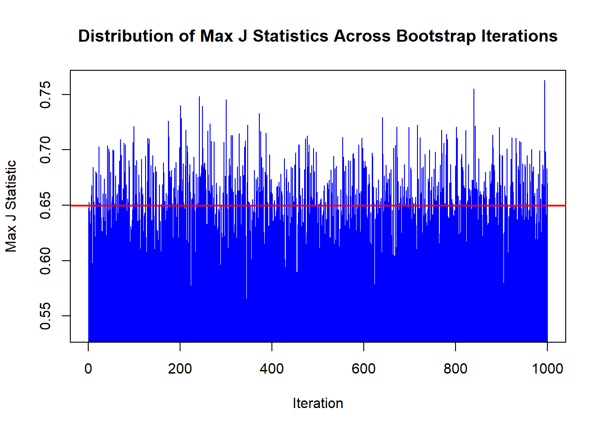

1. Data Preparation and Setup
Initial data loading and basic transformations.
suppressPackageStartupMessages({
library(plotly)
library(readr)
library(dplyr)
library(forcats)
library(stringr)
library(tidyr)
library(DataExplorer)
library(randomForest)
library(xgboost)
library(shiny)
library(GGally)
library(ROCR)
library(ggplot2)
library(doParallel)
})
# Loading datasets
data <- read_csv("train.csv")
## Rows: 891 Columns: 12
## ── Column specification ────────────────────────────────────────────────────────
## Delimiter: ","
## chr (5): Name, Sex, Ticket, Cabin, Embarked
## dbl (7): PassengerId, Survived, Pclass, Age, SibSp, Parch, Fare
##
## ℹ Use `spec()` to retrieve the full column specification for this data.
## ℹ Specify the column types or set `show_col_types = FALSE` to quiet this message.
pd <- read_csv("test.csv")
## Rows: 418 Columns: 11
## ── Column specification ────────────────────────────────────────────────────────
## Delimiter: ","
## chr (5): Name, Sex, Ticket, Cabin, Embarked
## dbl (6): PassengerId, Pclass, Age, SibSp, Parch, Fare
##
## ℹ Use `spec()` to retrieve the full column specification for this data.
## ℹ Specify the column types or set `show_col_types = FALSE` to quiet this message.
# Initial data exploration
introduce(data)
## # A tibble: 1 × 9
## rows columns discrete_columns continuous_columns all_missing_columns
## <int> <int> <int> <int> <int>
## 1 891 12 5 7 0
## # ℹ 4 more variables: total_missing_values <int>, complete_rows <int>,
## # total_observations <int>, memory_usage <dbl>

## Rows: 891
## Columns: 12
## $ PassengerId <dbl> 1, 2, 3, 4, 5, 6, 7, 8, 9, 10, 11, 12, 13, 14, 15, 16, 17,…
## $ Survived <dbl> 0, 1, 1, 1, 0, 0, 0, 0, 1, 1, 1, 1, 0, 0, 0, 1, 0, 1, 0, 1…
## $ Pclass <dbl> 3, 1, 3, 1, 3, 3, 1, 3, 3, 2, 3, 1, 3, 3, 3, 2, 3, 2, 3, 3…
## $ Name <chr> "Braund, Mr. Owen Harris", "Cumings, Mrs. John Bradley (Fl…
## $ Sex <chr> "male", "female", "female", "female", "male", "male", "mal…
## $ Age <dbl> 22, 38, 26, 35, 35, NA, 54, 2, 27, 14, 4, 58, 20, 39, 14, …
## $ SibSp <dbl> 1, 1, 0, 1, 0, 0, 0, 3, 0, 1, 1, 0, 0, 1, 0, 0, 4, 0, 1, 0…
## $ Parch <dbl> 0, 0, 0, 0, 0, 0, 0, 1, 2, 0, 1, 0, 0, 5, 0, 0, 1, 0, 0, 0…
## $ Ticket <chr> "A/5 21171", "PC 17599", "STON/O2. 3101282", "113803", "37…
## $ Fare <dbl> 7.2500, 71.2833, 7.9250, 53.1000, 8.0500, 8.4583, 51.8625,…
## $ Cabin <chr> NA, "C85", NA, "C123", NA, NA, "E46", NA, NA, NA, "G6", "C…
## $ Embarked <chr> "S", "C", "S", "S", "S", "Q", "S", "S", "S", "C", "S", "S"…

data %>% profile_missing()
## # A tibble: 12 × 3
## feature num_missing pct_missing
## <fct> <int> <dbl>
## 1 PassengerId 0 0
## 2 Survived 0 0
## 3 Pclass 0 0
## 4 Name 0 0
## 5 Sex 0 0
## 6 Age 177 0.199
## 7 SibSp 0 0
## 8 Parch 0 0
## 9 Ticket 0 0
## 10 Fare 0 0
## 11 Cabin 687 0.771
## 12 Embarked 2 0.00224

6. Feature Importance Analysis
In a randomforest model what is the auc and the most important
predictors
it <- 100 # Number of iterations
imp_df <- data.frame(matrix(0, nrow = it, ncol = 14))
colnames(imp_df) <- c("Pclass", "Sex", "Age", "SibSp", "Parch", "Fare", "Embarked", "Ticket_Length",
"Ticket_Is_Number", "Title", "Name_Length", "n", "Cabin_Letter", "Has_Cabin")
auc <- numeric(it) # ensure that 'it' is used here instead of 'n'
for (i in 1:it) {
ind <- sample(nrow(data), nrow(data), replace = TRUE)
train <- data[ind, ]
test <- data[-ind, ]
mod <- randomForest(Survived ~ . - PassengerId, data = train, ntree = 1200, family = "binomial")
phat <- predict(mod, newdata = test, type = "response")
pred_roc <- prediction(phat, as.numeric(test$Survived))
auc[i] <- performance(pred_roc, "auc")@y.values[[1]]
# Get the importance scores as a named vector
imp_scores <- importance(mod)
imp_scores_vector <- as.vector(imp_scores[,1]) # Assuming you want the first column of the importance matrix
names(imp_scores_vector) <- rownames(imp_scores)
# Assign the scores to the dataframe
imp_df[i, names(imp_scores_vector)] <- imp_scores_vector
}
plot(auc, col="red")
abline(a = mean(auc), b = 0, col = "blue", lwd = 2)
abline(a = mean(auc)-1.96*sd(auc), b = 0, col = "green", lwd = 3)
abline(a = mean(auc)+1.96*sd(auc), b = 0, col = "green", lwd = 3)

## [1] 0.8796318
## [1] 0.01747429
Rank the most important predictors
col_means <- colMeans(imp_df)
mean_df <- data.frame(Feature = names(col_means), Mean = col_means)
# Plotting
ggplot(mean_df, aes(x = reorder(Feature, Mean), y = Mean)) +
geom_bar(stat = "identity", fill = "steelblue") +
theme_minimal() +
labs(title = "Feature Importance", x = "Feature", y = "Mean Importance") +
coord_flip() # Flipping coordinates for better readability

Pclass Description: Passenger class, a proxy for socio-economic
status with 1 being the highest and 3 the lowest. Origin: Extracted
directly from the Titanic dataset. It’s a crucial variable as passenger
class was a significant factor in survival rates.
Sex Description: Gender of the passengers, either male or female.
Origin: Directly from the Titanic dataset. Gender played a key role in
survival, as women were often given priority for lifeboats.
Age Description: Age of the passengers. Origin: This is a primary
variable from the Titanic dataset. Age, as a demographic factor, likely
influenced survival chances.
SibSp Description: Number of siblings or spouses aboard the Titanic.
Origin: Taken from the Titanic dataset, it indicates family size, which
could influence survival decisions and opportunities.
Parch Description: Number of parents or children aboard. Origin: From
the Titanic dataset, indicating if the passenger was traveling with
family, especially with dependents.
Fare Description: Passenger fare. Origin: Represents the amount paid
for the journey, sourced from the Titanic dataset. Higher fares might
correlate with higher passenger classes.
Embarked Description: Port of embarkation (C = Cherbourg, Q =
Queenstown, S = Southampton). Origin: Part of the original dataset,
potentially relevant as passengers’ embarkation points might correlate
with other socio-economic factors.
Ticket_Length Description: Length of the ticket number as a numerical
value. Origin: Engineered feature, derived from the length of the ticket
number string. It’s a proxy to differentiate ticket types.
Ticket_Is_Number Description: Boolean indicating whether the ticket
is purely numeric. Origin: An engineered feature created to see if
having a numeric ticket correlates with any survival pattern.
Title Description: Title extracted from the passenger’s name, such as
Mr., Mrs., etc. Origin: An engineered feature derived from passengers’
names. It’s useful in inferring social status, gender, and marital
status.
Name_Length Description: Length of the passenger’s name. Origin: This
is an engineered feature, indicating possibly if longer names (which
might include titles or honorifics) correlate with social status or
survival rate.
n Description: Frequency of each title in the dataset. Origin: This
engineered feature counts how common each title is, which can provide
insights into the typical social status or role groups aboard the
ship.
Cabin_Letter Description: The first letter of the cabin number, which
could indicate the deck or location on the ship. Origin: Extracted and
engineered from the cabin information in the dataset, giving an idea
about the passenger’s accommodation location which could influence
survival likelihood.
Has_Cabin Description: A Boolean indicating whether the passenger had
a cabin on the Titanic. Origin: An engineered feature from the cabin
data, representing whether the passenger had a private cabin,
potentially correlating with class and survival rate.
8. Run our model
Get a general feel for nrounds value
This is the process we should be listening too. i will show why we
dont use early stopping rounds with watchlist etc
# Define XGBoost parameters
params <- list(
booster = "gbtree",
objective = "binary:logistic",
eta = 0.1
)
grd <- seq(1, 200, by = 10)
o <- 100
rs <- opt_nrd4eta(xs = xs, y = y, params = params, o, grd)

## $best_nrounds
## [1] 51
##
## $max_auc
## [1] 0.8725695
##
## $elapsed_time
## Time difference of 9.919981 mins
We see that nrounds peaks very very fast. if we do xgboosting
watchlistit very fast there aswell but the
watchlist/early_stopping_rounds has a issue i will talk about.
I want to note that the internal xgboost watchlist early stopping
rounds is very similar but not the same exactly.. it shows it its peak
very fast
We must use my method due to the fact that in mine each point of the
graph is 100 runs so it is more reliable. However i will print out the
xgboost internal way of of seeing because it bring up a very important
point
Now we use early stopping rounds with bootstrapping
params <- list(booster = "gbtree",
objective = "binary:logistic",
eta = 0.1)
max_rounds <- 1000
esr <- 10
n <- 1000
# Vector to store the best iteration for each bootstrap sample
bit <- c()
auc <- c()
for (i in 1:n){
# Creating a bootstrap sample
ind <- unique(sample(nrow(xs), nrow(xs), replace = TRUE))
dm <- xgb.DMatrix(data = xs[ind, ], label = y[ind])
dv <- xgb.DMatrix(data = xs[-ind, ], label = y[-ind])
# Training the model on the bootstrap sample
bsm <- xgb.train(params = params,
data = dm,
nrounds = max_rounds,
early_stopping_rounds = esr,
watchlist = list(train = dm, val = dv),
eval_metric = "auc",
maximize = TRUE,
verbose = FALSE
)
# Storing the best iteration
bit[i] <- bsm$best_iteration
# Predict on the validation set and calculate AUC
phat <- predict(bsm, dv, type = "prob")
# Calculating the AUC
pred_rocr <- prediction(phat, y[-ind])
auc_ROCR <- performance(pred_rocr, measure = "auc")
auc[i] <- auc_ROCR@y.values[[1]]
}
frequency <- table(factor(bit))
# Creating a bar plot
barplot(frequency, main = "Frequency of Best Iterations",
xlab = "Best Iteration", ylab = "Frequency")

Looking just at watchlist early stopping rounds someone could assume
that the best nrounds is 1. !THIS IS NOT THE CASE!
I dislike k fold cross validation as it give varying results but it
also says that the best iterations are not the first few iterations
The ranges seem to be from 40 - 200 acording the cv. but i dont trust
that due to how varying the results are
# Set parameters
params <- list(
booster = "gbtree",
objective = "binary:logistic",
eta = 0.1
)
num_rounds <- 1000
esr <- 50
# Create DMatrix
d <- xgb.DMatrix(data = xs, label = y)
# Perform cross-validation
cvr<- xgb.cv(params = params,
data = d,
nfold = 5,
nrounds = num_rounds,
early_stopping_rounds = esr,
maximize = TRUE,
verbose = TRUE,
showsd = T,
stratified = T,
print.every.n = 10,
eval_metric = "auc"
)
## [1] train-auc:0.909962+0.006517 test-auc:0.845877+0.025714
## Multiple eval metrics are present. Will use test_auc for early stopping.
## Will train until test_auc hasn't improved in 50 rounds.
##
## [11] train-auc:0.950883+0.006521 test-auc:0.874383+0.017379
## [21] train-auc:0.966295+0.002099 test-auc:0.877515+0.021052
## [31] train-auc:0.977021+0.001509 test-auc:0.881517+0.021449
## [41] train-auc:0.983679+0.001834 test-auc:0.882195+0.017792
## [51] train-auc:0.988883+0.001002 test-auc:0.883648+0.017732
## [61] train-auc:0.992312+0.000644 test-auc:0.882573+0.017433
## [71] train-auc:0.994635+0.000570 test-auc:0.881298+0.016903
## [81] train-auc:0.996111+0.000383 test-auc:0.879925+0.016569
## [91] train-auc:0.997126+0.000500 test-auc:0.879638+0.016417
## Stopping. Best iteration:
## [48] train-auc:0.987573+0.001188 test-auc:0.884327+0.016963
# Get the average AUC across all folds
avg_auc <- max(cvr$evaluation_log$test_auc_mean)
cat("Average AUC across all folds: ", avg_auc, "\n")
## Average AUC across all folds: 0.8843271
## [1] 48
I want to draw huge attention that this way is actually different
then our way. This way takes the SINGLE best iteration from 1000 loops.
it is not averaged out like in ours…
For example iteration 1 or 2 may have extreme volatility in auc (this
is what we observe in this data).. because of this high volatility it
will win its run more often then iteration 30. HOWEVER just because it
wins its iteration more doesnt mean it is better. Iteration 30 will on
average be better then iteration 2.
We can’t just say this tho we have to test it….
params <- list(
booster = "gbtree",
objective = "binary:logistic",
eta = 0.1
)
# Define the range of grid values for number of rounds
grd <- c(1, 3, 30, 40, 100, 200)
# Set the number of iterations
o <- 100
# Call the function to optimize the number of rounds
result <- opt_nrd4eta(xs, y, params, o, grd)

While i dont want to beat a dead horse into the ground i will do one
last test so show that the lower values (1-10) are not to be tuned
on.
This will set eta to 0.1 as the internal xgboost best_iteration would
say is the best. we run it 100 times and look at the auc and how low it
is.
params <- list(booster = "gbtree",
objective = "binary:logistic",
eta = 0.1)
n <- 250
auc <- c()
for (i in 1:n){
# Creating a bootstrap sample
ind <- unique(sample(nrow(xs), nrow(xs), replace = TRUE))
dm <- xgb.DMatrix(data = xs[ind, ], label = y[ind])
dv <- xgb.DMatrix(data = xs[-ind, ], label = y[-ind])
# Training the model on the bootstrap sample
bsm <- xgb.train(params = params,
data = dm,
nrounds = 1
)
phat <- predict(bsm, dv, type = "prob")
pred_rocr <- prediction(phat, y[-ind])
auc_ROCR <- performance(pred_rocr, measure = "auc")
auc[i] <- auc_ROCR@y.values[[1]]
}
# plot auc and 95% CI of the runs
plot(auc, col="red")
abline(a = mean(auc), b = 0, col = "blue", lwd = 2)
abline(a = mean(auc)-1.96*sd(auc), b = 0, col = "green", lwd = 3)
abline(a = mean(auc)+1.96*sd(auc), b = 0, col = "green", lwd = 3)

This supports exactly what we were saying. These low nrounds have a
lower auc and higher variation when properly run
## [1] 0.01872219
## [1] 0.8556219
Show nrounds 50 has better auc and lower sd
params <- list(booster = "gbtree",
objective = "binary:logistic",
eta = 0.1)
n <- 250
auc <- c()
for (i in 1:n){
# Creating a bootstrap sample
ind <- unique(sample(nrow(xs), nrow(xs), replace = TRUE))
dm <- xgb.DMatrix(data = xs[ind, ], label = y[ind])
dv <- xgb.DMatrix(data = xs[-ind, ], label = y[-ind])
# Training the model on the bootstrap sample
bsm <- xgb.train(params = params,
data = dm,
nrounds = 50
)
phat <- predict(bsm, dv, type = "prob")
pred_rocr <- prediction(phat, y[-ind])
auc_ROCR <- performance(pred_rocr, measure = "auc")
auc[i] <- auc_ROCR@y.values[[1]]
}
# plot auc and 95% CI of the runs
plot(auc, col="red")
abline(a = mean(auc), b = 0, col = "blue", lwd = 2)
abline(a = mean(auc)-1.96*sd(auc), b = 0, col = "green", lwd = 3)
abline(a = mean(auc)+1.96*sd(auc), b = 0, col = "green", lwd = 3)

## [1] 0.01784609
## [1] 0.8746359
Run the model
Set how many times our n runs is by setting a number to multiple by
ncores - 1
my machine has 20 cores so it is these numbers times 19
define rgrid from grid
Our grid is gonna be very small cause i dont want to run a million
sets of hyperparameters
grid <- expand.grid(
eta = seq(0.1, 0.1, by = 0),
max_depth = seq(10, 18, by = 4),
min_child_weight = seq(1, 1, by = 1),
subsample = seq(0.8, 0.8, by = 0),
colsample_bytree = seq(1, 1, by = 0),
lambda = seq(0, 5, by = 1),
alpha = seq(0, 5, by = 1),
gamma = seq(0, 5, by = 1),
nrounds = c(50, 100, 125, 150)
)
This creates a random grid
conf_lev <- .95
num_max <- 5 # Define number around the maximum
n <- log(1-conf_lev)/log(1-num_max/nrow(grid))
ind <- sample(nrow(grid), nrow(grid)*(n/nrow(grid)), replace = FALSE)
rgrid <- grid[ind, ]
Killing off 75% of rgrid
kgrid <- kill_rg(xs, y, rgrid, fv = 10)
k2grid <- kill_rg(xs, y, rgrid = kgrid, fv = 30)
k3grid <- kill_rg(xs, y, rgrid = k2grid, fv = 50)
k4grid <- kill_rg(xs, y, rgrid = k3grid, fv = 50)
Xgboost First Fun
define our inputs
n <- (detectCores() - 1) * r1rm
v <- v
grid <- rgrid
y <- y
xs <- xs
start_time <- Sys.time()
r1 <- run_xgb(xs, y, grid, n, v)
## New names:
## • `` -> `...10`
## • `` -> `...11`
## • `` -> `...12`
# Calculate elapsed time
end_time <- Sys.time()
elapsed_time <- end_time - start_time
## # A tibble: 6 × 12
## eta max_depth min_child_weight subsample colsample_bytree lambda alpha gamma
## <dbl> <dbl> <dbl> <dbl> <dbl> <dbl> <dbl> <dbl>
## 1 0.1 18 1 0.8 1 5 2 0
## 2 0.1 18 1 0.8 1 5 0 0
## 3 0.1 14 1 0.8 1 4 2 0
## 4 0.1 10 1 0.8 1 2 2 0
## 5 0.1 10 1 0.8 1 5 2 0
## 6 0.1 14 1 0.8 1 4 1 0
## # ℹ 4 more variables: nrounds <dbl>, AUC_val_v_runs <dbl>, AUC_Test <dbl>,
## # Rgrid_ind <int>
9. Selecting the best hyperparam set
This just sets up our hyperparameters so see their frequencies
etc.
# Calculating the frequency of each hyperparameter set
freqr <- r1 %>%
group_by(eta, max_depth, min_child_weight, subsample, colsample_bytree, lambda, alpha, gamma, nrounds) %>%
summarise(Frequency = n()) %>%
ungroup()
## `summarise()` has grouped output by 'eta', 'max_depth', 'min_child_weight',
## 'subsample', 'colsample_bytree', 'lambda', 'alpha', 'gamma'. You can override
## using the `.groups` argument.
# Calculating the average AUC_Test for each unique set of hyperparameters
avg_r1 <- r1 %>%
group_by(eta, max_depth, min_child_weight, subsample, colsample_bytree, lambda, alpha, gamma, nrounds) %>%
summarise(Avg_AUC_Test = mean(AUC_Test, na.rm = TRUE)) %>%
ungroup()
## `summarise()` has grouped output by 'eta', 'max_depth', 'min_child_weight',
## 'subsample', 'colsample_bytree', 'lambda', 'alpha', 'gamma'. You can override
## using the `.groups` argument.
# Merging the frequency data with the averaged AUC_Test scores
mr <- left_join(avg_r1, freqr, by = c("eta", "max_depth", "min_child_weight", "subsample", "colsample_bytree", "lambda", "alpha", "gamma", "nrounds"))
Take the best test score that has a frequency of at least th
th <- max(mr$Frequency)/1.25
filtered_m_r3 <- mr %>%
filter(Frequency >= th)
bp <- filtered_m_r3 %>%
filter(Avg_AUC_Test == max(filtered_m_r3$Avg_AUC_Test))
bp
## # A tibble: 1 × 11
## eta max_depth min_child_weight subsample colsample_bytree lambda alpha gamma
## <dbl> <dbl> <dbl> <dbl> <dbl> <dbl> <dbl> <dbl>
## 1 0.1 18 1 0.8 1 3 2 0
## # ℹ 3 more variables: nrounds <dbl>, Avg_AUC_Test <dbl>, Frequency <int>
10. Final Presentaion of AUC
hp <- list(
eta = bp[["eta"]][1],
max_depth = bp[["max_depth"]][1],
min_child_weight = bp[["min_child_weight"]][1],
subsample = bp[["subsample"]][1],
colsample_bytree = bp[["colsample_bytree"]][1],
lambda = bp[["lambda"]][1],
alpha = bp[["alpha"]][1],
gamma = bp[["gamma"]][1]
)
# Set up parallel backend to use multiple cores
registerDoParallel(cores = detectCores())
r <- 1000
auc <- numeric(r)
auc <- foreach(i = 1:r, .combine = c, .packages = c("xgboost", "ROCR"),
.export = c("xs", "y", "hp", "bp")) %dopar% {
# Bootstrap sampling
ind <- sample(nrow(xs), nrow(xs)*1.5, replace = TRUE)
train_xs <- xs[ind, ]
test_xs <- xs[-ind, ]
train_y <- y[ind]
test_y <- y[-ind]
# Create DMatrix for XGBoost
dtrain <- xgb.DMatrix(data = train_xs, label = train_y)
dtest <- xgb.DMatrix(data = test_xs, label = test_y)
# Train XGBoost model
xgbmdl <- xgb.train(params = hp, data = dtrain, nrounds = bp[["nrounds"]][1])
# Prediction
phat <- predict(xgbmdl, dtest)
# Calculate AUC
pred_roc <- prediction(phat, test_y)
auc_value <- performance(pred_roc, "auc")@y.values[[1]]
auc_value
}
# Stop the parallel backend
stopImplicitCluster()
# auc now contains the AUC scores
mean(auc)
## [1] 0.879965
# plot auc and 95% CI of the runs
plot(auc, col="red")
abline(a = mean(auc), b = 0, col = "blue", lwd = 2)
abline(a = mean(auc)-1.96*sd(auc), b = 0, col = "green", lwd = 3)
abline(a = mean(auc)+1.96*sd(auc), b = 0, col = "green", lwd = 3)

Overall the results dont seem amazing compared to random forest. I
would point reduced run amount for especialy running r1. This would’ve
let us get a better final auc. also keep in mind our grid was crazy
small like under 3000 rows. I think with a better grid we can definitly
improve. I also dont know how i feel about the method i used to reduce
grid size. Im going to look more into methodology for selecting final
set of hyperparameter aswell.
r <- 1000 # Number of bootstrap iterations
best_thresholds <- numeric(r) # To store the best threshold per iteration
j_stats <- numeric(r) # To store the max J statistic per iteration
for(i in 1:r) {
# Bootstrap sampling
ind <- sample(nrow(xs), size = nrow(xs), replace = TRUE)
train_xs <- xs[ind, ]
test_xs <- xs[-ind, ]
train_y <- y[ind]
test_y <- y[-ind]
# Create DMatrix objects
dtrain <- xgb.DMatrix(data = train_xs, label = train_y)
dtest <- xgb.DMatrix(data = test_xs, label = test_y)
# Train the model
xgbmdl <- xgb.train(params = hp, data = dtrain, nrounds = bp[["nrounds"]][1])
# Predictions
phat <- predict(xgbmdl, dtest)
# ROCR predictions object
pred <- prediction(phat, test_y)
# Calculate performance measures
perf <- performance(pred, measure = "sens", x.measure = "spec")
sensitivity <- slot(perf, "y.values")[[1]]
specificity <- slot(perf, "x.values")[[1]]
thresholds <- slot(perf, "alpha.values")[[1]]
j_stat <- sensitivity + specificity - 1
# Find the best threshold (maximizing J statistic)
best_idx <- which.max(j_stat)
best_thresholds[i] <- thresholds[best_idx]
j_stats[i] <- j_stat[best_idx]
}
# Calculate and print the average of the best thresholds
avg_best_threshold <- mean(best_thresholds)
cat("Average Best Threshold:", avg_best_threshold, "\n")
## Average Best Threshold: 0.4390873
# Plot the distribution of max J statistics for each iteration
plot(j_stats, type = "h", col = "blue", xlab = "Iteration", ylab = "Max J Statistic",
main = "Distribution of Max J Statistics Across Bootstrap Iterations")
abline(h = mean(j_stats), col = "red", lwd = 2) # Mean J Stat line

Focus in future.
is the way i cut down rgrid okay how to select best hypers and i
properly tuning for jstat for titanic should i use another^ throw more
computing power at it :)
JMJ